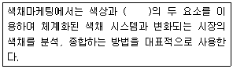
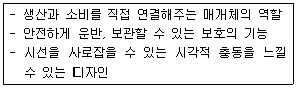
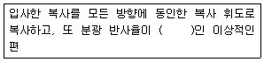
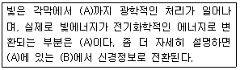
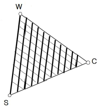

컬러리스트산업기사 (2019-08-04 기출문제)
1과목: 색채심리
1. 색채의 연상 효과와 관련이 없는 것은?
- 제품 정보로서의 색
- 사회ㆍ문화 정보로서의 색
- 국제 언어로서의 색
- 색채 표시 기호로서의 색
(정답률: 56%)

2. 색채마케팅에 관한 설명 중 가장 옳은 것은?
- 색을 과학적, 심리적으로 이용하여 구매를 유도하는 기업경영전략이다.
- 제품 판매를 위한 판매 전략이므로 CIP는 색채마케팅이라고 할 수 없다.
- 색채 마케팅은 궁극적으로 경쟁제품의 가격을 낮추는 효과를 낸다.
- 심미적인 역할을 강조하는 것이므로 품질 향상효과와는 관련이 없다.
(정답률: 80%)
3. 긍정적 연상으로는 성숙, 신중, 겸손의 의미를 가지나 부정적 연상으로 무기력, 무관심, 후회의 연상이미지를 가지는 색은?
- 보라
- 검정
- 회색
- 흰색
(정답률: 77%)
4. 정보로서의 색의 역할에 대한 설명이 틀린 것은?
- 제품의 차별화와 색채연상효과를 높이기 위해 민트향이 첨가된 초콜릿 제품의 포장을 노랑과 초콜릿색의 조합으로 하였다.
- 시원한 철양음료 캔에 청색, 녹색, 그리고 흰색의 조합으로 디자인하였다.
- 기독교와 천주교에서는 하느님과 성모마리아를 고귀한 청색으로 연상하였다.
- 스포츠 경기에 참가한 팀을 쉽게 구별할 수 있도록 운동복 색채를 선정함으로써 경기의 효율성과 관람자의 관전이 쉽도록 돕는다.
(정답률: 70%)
5. 자동차에 대한 국내 소비자의 선호색을 알아보고자 할 때 고려할 사항으로 가장 거리가 먼 것은?
- 출신국가
- 연령
- 성별
- 교육수준
(정답률: 50%)
6. 사고 예방, 방화, 보건위험정보 그리고 비상탈출을 목적으로 주의를 끌고 메시지를 빠르게 이해시키기 위한 특별한 성질의 색을 뜻하는 것은?
- 주목색
- 경고색
- 주의색
- 안전색
(정답률: 53%)
7. 서양 문화권에서 색채가 상징하는 역할이 잘못 연결된 것은?
- 왕권 - 노랑
- 생명 - 초록
- 순결 - 흰색
- 평화 - 파랑
(정답률: 76%)
8. 색의 연상에 관한 설명 중 옳은 것은?
- 무채색은 구체적인 연상이 나타나기 쉽다.
- 색의 연상은 개인적인 경험, 기억, 사상 등에 직접적인 연관성이 없다.
- 연령이 높아질수록 추상적인 연상의 범위가 좁아진다.
- 색의 연상은 특정한 인상을 기억하고 관련된 분위기와 이미지를 생각해 낸다.
(정답률: 75%)
9. 도시의 색채계획으로 틀린 것은?
- 언덕이 많은 항구도시는 밝은 색을 주조로 한다.
- 같은 항구도시라도 청명일수에 따라 건물과 간판, 버스의 색에 차이를 준다.
- 제주도는 지역에서 생산되는 건축 재료인 현무암과 붉은 화산석의 색채를 반영한다.
- 지역과 상관없이 기업의 고유색을 도시에 적용하여 통일감을 준다.
(정답률: 84%)
10. 오감을 통한 공감각현상으로 소리의 높고 낮음으로 연상되는 색을 설명한 카스텔(Castel)의 연구로 옳은 것은?
- D는 빨강
- G는 녹색
- E는 노랑
- C는 검은색
(정답률: 54%)
11. 기업색채를 가장 옳게 설명한 것은?
- 기업의 빌딩 외관에 사용한 색채
- 기업 내부의 실내 색채
- 기업의 이미지를 시각적으로 상징화한 색
- 기업에서 생산된 제품의 색채
(정답률: 88%)
12. 색의 촉감에서 분홍색, 계란색, 연두색 등에 다음 중 어떤 색이 가미되면 부드럽고 평온하며 유연한 기분을 자아내는가?
- 파란색
- 흰색
- 빨간색
- 검정색
(정답률: 86%)
13. 연령이 낮을수록 원색계열과 밝은 톤을 선호하다가 성인이 되면서 단파장의 파랑, 녹색을 점차 좋아하게 되는 색채 선호도의 변화의 이유는?
- 자연환경의 차이
- 기술습득의 증가
- 인문환경의 영향
- 사회적 일치감의 증대
(정답률: 55%)
14. 착시에 관한 설명으로 옳은 것은?
- 노란색 바탕의 회색이 파란색 바탕의 회색보다 노랗게 보인다.
- 빛 자극이 변화하더라도 물체의 색채가 그대로 유지되는 색채감각이다.
- 착시의 예로 대비현상과 잔상현상이 있다.
- 파란색 바탕의 노란색이 노란색 바탕의 파란색보다 더 작게 지각된다.
(정답률: 52%)
15. 안전색채에 대한 설명으로 틀린 것은?
- 빨강 : 금연, 수영금지, 화기엄금
- 주황 : 위험경고, 주의표지, 기계 방호물
- 파랑 : 보안경 착용, 안전복 착용
- 초록 : 의무실, 비상구, 대피소
(정답률: 44%)
16. 색채의 기능적 측면을 활용한 색채조절의 효과로 거리가 먼 것은?
- 일에 집중이 되고 실패가 줄어든다.
- 신체의 피로, 특히 눈의 피로를 막는다.
- 안전이 유지되고 사고가 줄어든다.
- 건물을 보호, 유지하기가 어렵다.
(정답률: 86%)
17. 색채마케팅에 영향을 주는 인구통계학적 요인으로 거리가 먼 것은?
- 거주 지역
- 신체 치수
- 연령 및 성별
- 라이프스타일
(정답률: 82%)
18. 다음의 ( )에 알맞은 말은?

- 명도
- 채도
- 이미지
- 톤
(정답률: 45%)
19. 기후에 따른 색채 선호에 대한 설명 중 틀린 것은?
- 피부가 희고 금발인 북구계 민족은 한색 계통을 선호한다.
- 우리나라는 4계절이 뚜렷해 자연환경적인 색채가 정신 및 생활문화에 많은 영향을 미친다.
- 피부가 거무스름하고 흑갈색 머리칼인 라틴계는 선명한 난색계통을 즐겨 사용한다.
- 일조량이 적은 지역에서는 장파장 색을 선호하여 채도가 높은 색을 좋아한다.
(정답률: 73%)
20. 다음 중 색자극에 대한 일반적 반응으로 틀린 것은?
- 색에 따라 기쁨, 공포, 슬픔, 쾌/불쾌 등의 특유한 감정이 느껴진다.
- 색자극에 의해 혈압, 맥박수와 같은 자율신경 활동이나 호흡활동 등 신체반응이 나타난다.
- 빨간색은 따뜻하고 활동적이며 자극적인 특성을 가지고 있다.
- 색은 자극의 강도가 증가할수록 반응의 강도는 감소한다.
(정답률: 86%)
2과목: 색채디자인
21. 기존 제품의 재료나 기능 또는 형태를 개량하고 개선하는 것을 무엇이라 하는가?
- 리디자인(re-design)
- 리스타일(re-style)
- 이미지 디자인(image design)
- 유니버셜 디자인(universal design)
(정답률: 81%)
22. 다음의 특징을 고려하여 색채 계획을 해야 할 디자인 분야는?

- 헤어디자인
- 제품디자인
- 포장디자인
- 패션디자인
(정답률: 77%)
23. 색체계획 시 배색방법에 대한 설명으로 옳은 것은?
- 주조색은 보조색 다음으로 넓은 공간을 차지하며 40% 정도의 면적을 차지한다.
- 주조색은 전체적인 느낌을 전달하는 색으로 전체의 70%정도의 면적을 차지한다.
- 강조색은 보조요소들의 배합색으로 취급함으로써 변화를 주며 전체의 40% 정도의 면적을 차지한다.
- 강조색은 주조색 다음으로 넓은 공간을 차지하며 포인트 역할을 하는 색으로 전체의 70% 정도를 차지한다.
(정답률: 79%)
24. 그린 디자인(Green Design)의 원리에 대한 설명과 가장 거리가 먼 것은?
- 디자이너는 사용자의 건강에 피해를 주지 않도록 환경적 위험을 최소화한다.
- 서로 다른 종류의 여러 가지 재료에 의한 혼합재료를 사용한다.
- 재활용 부품과 재활용품이 아닌 부품이 분리되기 쉽도록 한다.
- 에너지와 자원의 효율성을 높인다.
(정답률: 78%)
25. 빅터 파파넥(Victor Papaneck)이 말한 디자인 목적의 복합기능(Function Complex)요소에 해당하지 않는 것은?
- 방법
- 미학
- 주목성
- 필요성
(정답률: 37%)
26. 디자인이라는 말이 의식적으로 사용되기 시작한 현대디자인의 성립 시기는?
- 18세기 초
- 19세기 초
- 20세기 초
- 21세기 초
(정답률: 36%)
27. 상품의 외관, 기능, 재료, 경제성 등을 종합적으로 심사하여 디자인의 우수성이 인증된 상품에 부여하는 마크는?
- KS Mark
- GD Mark
- Green Mark
- Symbol Mark
(정답률: 65%)
28. 주택의 색채계획 시 색채선택을 위한 사전작업으로 거리가 먼 것은?
- 공간의 여건분석 - 공간의 용도, 공간의 크기와 형태, 공간의 위치 검토
- 거주자의 특성파악 - 거주자의 직업, 지위, 연령, 기호색, 분위기, 라이프스타일 등 파악
- 주변 환경 분석 - 토지의 넓이, 시세, 교통, 편리성 등 확인
- 실내용품에 대한 고려 - 이미 소장하고 있거나 구매하고 싶은 가구, 그림 등 파악
(정답률: 58%)
29. 게슈탈트(Gestalt)의 그루핑 법칙과 거리가 먼 것은?
- 근접성
- 폐쇄성
- 유사성
- 상관성
(정답률: 58%)
30. 분방함과 풍부한 감정을 나타내기에 적합한 곡선은?
- 기하곡선
- 포물선
- 쌍곡선
- 자유곡선
(정답률: 63%)
31. 언어를 초월하여 직감으로 이해할 수 있도록 의미하는 내용의 형태를 상징적으로 시각화한 것은?
- 심벌
- 픽토그램
- 사인
- 로고
(정답률: 77%)
32. 다음 중 색채계획에 있어서 주변 환경과의 조화가 가장 중요한 분야는?
- 패션디자인
- 환경디자인
- 포장디자인
- 제품디자인
(정답률: 82%)
33. 테마공원, 버스 정류장 등에 도시민의 편의와 휴식을 위해 만들어진 시설물의 명칭은?
- 로드사인
- 인테리어
- 익스테리어
- 스트리트 퍼니처
(정답률: 79%)
34. 아르누보(Art nouveau)에 관한 설명 중 틀린 것은?
- 식물의 곡선 모티브를 특징으로 한 장식양식이다.
- 공예, 장식미술, 건축분야에서 활발히 전개되었다.
- 형태적 특성은 비대칭, 곡선, 연속성이다.
- 대량생산 또는 복수생산을 전제로 한다.
(정답률: 70%)
35. 패션 색채 계획 프로세스 중 색채정보 분석 단계에 해당하지 않는 것은?
- 이미지 맵 제작
- 색채계획서 작성
- 유행 정보 분석
- 시장 정보 분석
(정답률: 46%)
36. 균형감을 표현하는 방법 중의 하나로 도형을 한 점 위에서 일정한 각도로 회전시켰을 떄 생기는 균형의 종류는?
- 루트비 균형
- 확대 대칭 균형
- 좌우 대칭 균형
- 방사형 대칭 균형
(정답률: 62%)
37. 디자인 운동과 그 설명이 옳은 것은?
- 멤피스 : 꼴라주나 다른 요소들의 조합 또는 현대생활에서 경험되는 단편적인 경험의 조각이나 가치에 관한 것들에 대해 관심을 가졌다.
- 미니멀리즘 : 극도의 미학적 축소화에 의해 특징지어지며 주관적이며 풍부한 개인적 감성과 감정의 표현을 추구한다.
- 아방가르드 : 하이스타일(High-style)과 테크놀로지(Technology)의 합성어로 콘크리트, 철, 알루미늄, 유리 같은 차가운 재료들을 사용하여 현대 사회에 대한 반감을 표현하는 데에 이용하였다.
- 데스틸 : 색채의 선택은 주로 검정, 회색, 흰색이나 단색을 주로 사용하였고 최소한의 장식과 미학으로 간결하게 표현하였다.
(정답률: 28%)
38. 디자인 과정에서 드로잉의 주요 역할과 거리가 먼 것은?
- 아이디어 전개
- 형태 정리
- 사용성 검토
- 프레젠테이션
(정답률: 58%)
39. 색채계획(Color planning)에 관한 설명으로 틀린 것은?
- 색채의 목표를 달성하기 위해 제품의 특성 및 판매자의 심리를 이용해 효과적으로 색채를 적용하는 과정이다.
- 제품의 차별화, 환경조성, 업무의 향상, 피로의 경감등의 효과를 위해 절대적으로 필요하다.
- 색채 목적을 정확히 인식하고 시장조사와 색채심리, 색채전달계획을 세워 디자인을 적용해야한다.
- 시장정보를 충분히 조사하고 분석한 후에 시장 포지셔님에 의한 색채조절로 고객에게 우호적이고 강력하게 인상을 심어주어야 한다.
(정답률: 30%)
40. 영국산업혁명의 반작용으로 19세기에 출발한 미술공예운동의 창시자는?
- 무테지우스
- 윌리엄 모리스
- 허버트 리드
- 웨지우드
(정답률: 77%)
3과목: 섹채관리
41. 유기안료에 대한 설명으로 틀린 것은?
- 유기안료는 무기안료에 비해서 빛깔이 선명하고 착색력이 크다.
- 인디언 옐로(Indian Yellow), 세피아(Sepia)는 동물성 유기안료이다.
- 식물성 안료는 빛에 의해 탈색되는 단점이 있다.
- 합성유기안료에는 코발트계(Cobalt)와 카드뮴계(Cadmium)등이 있다.
(정답률: 30%)
42. 다음 중 산성염료로 염색할 수 없는 직물은?
- 견
- 면
- 모
- 나일론
(정답률: 21%)
43. 색채측정에서 측정조건이 (8° : de)로 표기되었을 떄 그 의미는?
- 빛을 시료의 수직방향으로부터 8° 기울여 입사시킨 후 산란된 빛을 측정한다. 정반사 성분은 제외한다.
- 빛을 시료의 수직방향으로부터 8° 기울여 입사시킨 후 산란된 빛을 측정한다. 정반사 성분은 포함한다.
- 빛을 모든 각도에서 시료의 표면에 입사시킨 후 광검출기를 시료의 수직으로부터 8° 기울여 측정한다. 정반사 성분은 제외한다.
- 빛을 모든 각도에서 시료의 표면에 입사시킨 후 광검출기를 시료의 수직으로부터 8° 기울여 측정한다. 정반사 성분은 포함한다.
(정답률: 38%)
44. 표면색의 시감비교방법으로 옳은 것은?
- 색비교를 위한 작업면의 조도는 5000 1x 이상으로 한다.
- 붉은 색을 시감 비교할 때 부스의 내부색은 명도 L°가 약 65의 무채색으로 한다.
- 어두운 색을 비교하는 경우 명도 L°가 약 15의 무광택 검은색으로 한다.
- 외광의 영향이 있는 경우 반투명천으로 작업면 주위를 둘러막은 조명 부스를 사용한다.
(정답률: 35%)
45. 분광식 계측기와 관련된 설명으로 옳은 것은?
- 백열전구와 필터를 함계 사용하여 표준광원의 조건이 되도록 한다.
- 시료에서 반사된 빛은 세 개의 색필터를 통과한 후 광검출기에서 검출한다.
- 삼자극치 값을 직접 측정한다.
- 시료의 분광반사율을 측정하여 색채를 계산한다.
(정답률: 50%)
46. 색상(hue)에 관한 설명으로 올바른 것은?
- 관측자의 색채 적응 조건의 영향에 따라 변화하는 색이 보이는 결과이다.
- 색상의 강도를 동일한 명도의 무채색으로 부터의 거리로 나타낸 시지각 속성이다.
- 상대적인 명암에 관한 색의 속성이다.
- 빨강, 노랑, 파랑과 같은 색지각의 성질을 특징짓는 색의 속성이다.
(정답률: 70%)
47. 색료의 호환성과 통용성을 확보하기 위한 색료표시 기준은?
- 연색지수
- 색변이지수
- 컬러인덱스
- 컬러 어피어런스
(정답률: 51%)
48. 입출력장치의 RGB 또는 CMYK 원색이 어떻게 재현될지 CIE모델을 사용하여 예측 가능하게 해주는 시스템은?
- CMS
- CCM
- CII
- CCD
(정답률: 21%)
49. 색역은 디바이스가 표현 가능한 색의 영역을 말한다. 색역에 대한 설명 중 틀린 것은?
- RGB를 원색으로 사용하는 모니터의 색역은 xy색도도상에서 삼각형을 이룬다.
- 프린터의 색역이 모니터의 색역보다 넓을 수 있다.
- 모니터의 톤재현 특성은 색역과는 무관하다.
- 디스플레이가 표현 가능한 색의 수와 색역의 넓이는 정비례한다.
(정답률: 21%)
50. 색온도에 관한 설명으로 옳은 것은?
- 완전 복사체의 색도를 그것의 절대 온도로 표시한 것이다.
- 색온도의 단위는 흑체의 섭씨온도(℃)로 표시한다.
- 시료 복사의 색도가 완전 복사체 궤적 위에 없을 때에는 절대 색온도를 사용한다.
- 색온도가 낮아질수록 푸른빛을 나타낸다.
(정답률: 27%)
51. 빛의 스펙트럼은 방사 에너지의 상태에 따라 여러 가지로 구분된다. 그 연결 관계가 틀린 것은?
- 태양 - 연속 스펙트럼
- 수은등 - 선 스펙트럼
- 형광등 - 띠 모양 스펙트럼
- 백열전구 - 선 스펙트럼
(정답률: 34%)
52. 다음 중 안료가 아닌 것은?
- 코치닐(cochineal)
- 한자 옐로(hanja yellow)
- 석록
- 구리
(정답률: 30%)
53. 사진촬영, 스캐닝 등의 작업에서 컬러 프로파일링을 할 수 있는 컬러 차트(color chart)는?
- Gray Scale
- IT8
- EPS5
- RGB
(정답률: 27%)
54. 다음은 완전 확산 반사면의 용어에 대한 설명이다. ( )에 적합한 수치는?

- 9
- 5
- 3
- 1
(정답률: 29%)
55. CIF 표준광 A의 색온도는?
- 6774K
- 6504K
- 4874K
- 2856K
(정답률: 51%)
56. 디지털 색채 시스템 중 RGB 컬러 값이 (255, 255, 0)로 주어질 때의 색채는?
- white
- yellow
- cyan
- magenta
(정답률: 63%)
57. 스캐너, 디지털 카메라 등의 입력장치에서 빛의 파장을 전기적 신호로 변환시키는 구성 요소는?
- 이미지 센서
- 래스터 영상
- Color appearance
- 벡터 그래픽 영상
(정답률: 41%)
58. 광택(gloss)에 대한 설명이 틀린 것은?
- 물체표면의 물리적 속성으로서 반사하는 광선에 의한 감각이다.
- 표면 정반사 성분은 투과하는 빛의 굴절각이 클수록 작아진다.
- 대비광택도는 두 개의 다른 조건에서 측정한 반사 광속의 비(比)로 나타내는 방법이다.
- 광택은 보는 방향에 따라 질감의 차이를 표현할 수 있다.
(정답률: 53%)
59. 분광 광도계를 사용하여 컬러를 측정하려는 경우 만족해야 하는 조건으로 틀린 것은?
- 파장의 범위를 380~780nm로 한다.
- 분광 반사율 또는 분광 투과율의 측정
- 분량 반사율 또는 분광 투과율의 재현성을 0.2% 이내로 한다.
- 분광 광도계의 파장은 불확도 10nm이내의 정확도를 유지한다.
(정답률: 33%)
60. 무조건 등색(isomerism)의 설명으로 옳은 것은?
- 어떠한 광원 아래에서도 등색이 성립한다.
- 보는 사람에 따라 다른 색으로 보이는 경우도 있다.
- 분광 반사율이 달라도 같은 색자극을 일으키는 현상이다.
- 육안으로 조색하는 경우에 성립하게 된다.
(정답률: 48%)
4과목: 색채지각의이해
61. 빨강 바탕 위의 주황은 노란빛을 띤 주황으로, 노랑 바탕위의 주황은 빨간빛을 띤 주황으로 보이는 현상은?
- 연변대비
- 색상대비
- 명도대비
- 채도대비
(정답률: 62%)
62. 색의 물리적 분류에 따른 설명이 옳은 것은?
- 간섭색 : 투명한 색 중에도 유리병 속의 액체나 얼음 덩어리처럼 3차원 공간의 투명한 부피를 느끼는 색
- 조명색 : 형광물질이 많이 사용되어 나타나는 색
- 광원색 : 자연광과 조명기구에서 나오는 빛의 색
- 개구색 : 물체의 표면에서 반사하는 빛이 나타내는 색
(정답률: 61%)
63. 그라데이션으로 배치된 색의 경계부분에서 나타나는 대비현상과 관련이 없는 것은?
- 경계대비
- 연변대비
- 계시대비
- 마하의 띠
(정답률: 33%)
64. 보색에 대한 설명으로 옳은 것은?
- 보색이 인접하면 채도가 서로 낮아 보인다.
- 보색을 혼합하면 회색이나 검정이 된다.
- 빨강의 보색은 보라이다.
- 보색잔상은 인접한 두 보색을 동시에 볼 때 생긴다.
(정답률: 61%)
65. 색채의 지각과 감정 효과의 설명 중 틀린 것은?
- 일반적으로 채도가 높은 색은 채도가 낮은 색보다 진출의 느낌이 크다.
- 일반적으로 팽창색은 후퇴색과 연관이 있다.
- 색의 온도감은 주로 색상에서 영향을 받는다.
- 중량감에 영향을 미치는 것은 명도의 차이이다.
(정답률: 66%)
66. 동시대비에 대한 설명으로 거리가 먼 것은?
- 자극과 자극 사이의 거리가 멀어질수록 대비효과는 약해진다.
- 색차가 클수록 대비 효과는 강해진다.
- 두 개의 다른 자극이 연속해서 나타날수록 대비효과는 강해진다.
- 동시대비 효과는 순간적으로 일어나므로 장시간 두고 보면 대비효과는 약해진다.
(정답률: 50%)
67. 색의 진출의 후퇴, 팽창과 수축에 대한 설명으로 틀린 것은?
- 따뜻한 색이 차가운 색보다 더 진출해 보인다.
- dull tone의 색이 pale tone 보다 더 후퇴되어 보인다.
- 저채도, 저명도 색이 고채도, 고명도의 색보다 더 진출되어 보인다.
- 일반적으로 진출색은 평창색이 되고, 후퇴색은 수축색이 된다.
(정답률: 76%)
68. 4가지의 기본적인 유채색인 빨강 - 초록, 파랑 - 노랑이 대립적으로 부호화된다는 색채 지각의 대립과정이론을 제안한 사람은?
- 오스트발트
- 맥스웰
- 헤링
- 헬름홀츠
(정답률: 57%)
69. 영ㆍ헬름홀츠의 3원색설에 대한 설명이 틀린 것은?
- 3원색설의 기본색은 빛의 혼합인 3원색과 동일하다.
- 색의 잔상효과와 대비이론의 근거가 되는 학설이다.
- 노랑은 빨강과 초록의 수용기가 동등하게 자극되었을 때 지각된다는 학설이다.
- 3종류의 시신경세포가 혼합되어 색채지각을 할 수 있다는 학설이다.
(정답률: 34%)
70. 다음의 ( )에 적합한 용어로 옳은 것은?

- A : 맥락막, B : 시각신경
- A : 망막, B : 시각신경
- A : 망막, B : 광수용기
- A : 맥락막, B : 광수용기
(정답률: 41%)
71. 병원이나 역 대합실의 배색 중 지루함을 줄일 수 있는 색 계열은?
- 빨강계열
- 청색계열
- 회색계열
- 흰색계열
(정답률: 73%)
72. 하나의 매질로부터 다른 매질로 진입하는 파동이 경계면에서 나가는 방향을 바꾸는 현상은?
- 반사
- 산란
- 간섭
- 굴절
(정답률: 66%)
73. 색의 항상성에 관한 설명으로 틀린 것은?
- 자연광 아래에서의 배색종이는 배열등 아래에서는 붉은 빛의 종이로 보인다.
- 자극시간이 짧으면 색채의 항상성은 작지만, 완전히 항상성을 잃지는 않는다.
- 분광분포도 또는 눈의 순응상태가 바뀌어도 지각되는 색은 변하지 않는다.
- 조명이 강해도 검은 종이는 검은색 그대로 느껴진다.
(정답률: 40%)
74. 가법혼색의 혼합결과가 틀린 것은?
- 빨강 + 녹색 = 노랑
- 빨강 + 파랑 = 마젠타
- 녹색 + 파랑 = 시안
- 빨강 + 녹색 + 파랑 = 검정
(정답률: 65%)
75. 작은 방을 길게 보이고 싶어 한쪽 벽면을 칠한다면 다음 중 어느 색으로 칠하면 좋을까?
- 인디고블루(2.5PB 2/4)
- 계란색(7.5YR 8/4)
- 귤색(7.5YR 8/4)
- 대나무색(7.5GY 4/6)
(정답률: 46%)
76. 빛과 색에 대한 설명 중 틀린 것은?
- 단파장은 굴절률이 적으며 산란하기 어렵다.
- 색은 빛이 물체에 반사되어서 나타난다.
- 동물은 인간이 반응하지 않는 파장에 반응하는 시각세포를 가진 것도 있다.
- 색은 밝고 어둠에 따라 달라져 보일 수 있다.
(정답률: 61%)
77. 일정한 밝기에서 채도가 높아질수록 더 밝아 보인다는 시지각적 효과는?
- 헬름홀츠 - 콜라우슈 효과
- 배너리 효과
- 에브니 효과
- 스티븐스 효과
(정답률: 10%)
78. 때때로 색들끼리 서로 영향을 주어서 인접색에 가깝게 보이는 효과는?
- 동화효과
- 대비효과
- 혼색효과
- 감정효과
(정답률: 75%)
79. 중간혼합에 대한 설명으로 틀린 것은?
- 점묘파 화가 쇠라의 작품은 병치혼합의 방법이 활용된 것이다.
- 병치혼합은 일종의 가법혼색이다.
- 회전혼합은 직물이나 컬러 TV의 화면, 인쇄의 망점 등에 활용되고 있다.
- 회전혼합은 색을 칠한 팽이에서 찾아볼 수 있다.
(정답률: 58%)
80. 색유리판을 여러 장 겹치는 방법의 혼색에 관한 설명 중 옳은 것은?
- 인쇄잉크의 혼색과 같은 원리이다.
- 컬러 모니터의 색과 같은 원리이다.
- 병치가법혼색과 유사하다.
- 무대조명에 의한 혼색과 같다.
(정답률: 39%)
5과목: 색채체계의이해
81. 색이름 수식형별 기준색이름의 표기가 틀린 것은?
- 자줏빛 분홍
- 초록빛 연두
- 빨간 노랑
- 파란 검정
(정답률: 28%)
82. 한국전통색에 대한 설명으로 틀린 것은?
- 유황색은 황색과 흑색의 혼합으로 얻어지는 간색이다.
- 녹색은 청색과 황색의 혼합으로 얻어지는 간색이다.
- 자색은 적색과 백색의 혼합으로 얻어지는 간색이다.
- 벽색은 청색과 백색의 혼합으로 얻어지는 간색이다.
(정답률: 43%)
83. Yxy 색표계의 설명으로 옳은 것은?
- 1931년 CIE가 새로운 가상의 색공간을 규정하고, 실제로 사람이 느끼는 빛의 색과 등색이 되는 실험을 시도하여 정의하였다.
- 색지각의 3속성에 따라 정성적으로 분류하여 기호나 번호로 색을 표기했다.
- 인간의 감성에 접근하기 위해 헤링의 대응색설에 기초하여 CIE에서 정의한 색공간이다.
- XYZ색표계가 양적인 표시로 색채느낌을 알기 어렵고, 밝기의 정도를 판단할 수 없어 수식을 변환하여 얻은 색표계이다.
(정답률: 45%)
84. 실생활에서 상징적 색채로 사용되었던 오방색 중 남(南)쪽을 의미하고 예(禮)를 상징하는 색상은?
- 파랑
- 검정
- 노랑
- 빨강
(정답률: 51%)
85. 먼셀 색상환의 기본 구성 요소가 아닌 것은?
- 색상(H)
- 명도(V)
- 채도(C)
- 암도(D)
(정답률: 77%)
86. 연속(Gradation) 배색에 대한 설명이 틀린 것은?
- 조화를 기본으로 하여 리듬감이나 운동감을 주는 배색방법이다.
- 질서정연한 느낌으로 자연스럽게 배열한 정리 배색이다.
- 체크문양, 타일문양, 바둑판 문양에서 많이 볼 수 있다.
- 색상, 명도, 채도, 톤의 단계적인 변화를 이용할 수 있다.
(정답률: 49%)
87. NCS색삼각형에서 W_S축과 평행한 직선상에 놓인 색들이 하는 것은?

- 동일 하양색도(Same whiteness)
- 동일 검정색도(Same blackness)
- 동일 순색도(Same chromaticness)
- 동일 뉘앙스(same nuance)
(정답률: 52%)
88. 오스트발트 색채체계의 단일 색상면 삼각형 내에서 동일한 양의 백색을 가지는 색채를 일정한 간격으로 선택하여 배색함으로써 얻을 수 있는 색채조화는?
- 등백색 조화
- 등순색 조화
- 등흑색 조화
- 등가색환 조화
(정답률: 68%)
89. 먼셀 기호로 표시할 때 5Y8/10의 설명으로 올바른 것은?
- 색상 5Y, 명도 8, 채도 10
- 색상 Y8, 명도 10, 채도 5
- 색상 5, 색상 Y8, 채도 10
- 색상 5Y, 채도 8, 명도 10
(정답률: 73%)
90. NCS 색표기 S7020-R20B의 설명으로 틀린 것은?
- S7020에선 70은 흑색도를 나타낸다.
- S7020에서 20은 백색도를 나타낸다.
- R20B는 빨강 80%를 의미한다.
- R20B는 파랑 20%를 의미한다.
(정답률: 44%)
91. 먼셀 색체계에 대한 설명으로 옳은 것은?
- 먼셀 밸류라고 불리는 명도(V)축은 번호가 증가하면 물리적 밝기가 감소하여 검정이 된다.
- Gray Scale은 명도단계를 뜻하며, 자연색이라는 영문의 앞자를 따서 M1, M2, M3...로 표시한다.
- 무채색의 가장 밝은 흰색과 가장 어두운 검정사이에는 14단계의 유채색이 존재한다.
- V 번호가 같은 유채색과 무채색은 서로 명도가 동일하다.
(정답률: 48%)
92. 문ㆍ스펜서의 색채조화론에 대한 설명 중 틀린 것은?
- 오메가 공간은 색의 3속성에 대해 지각적으로 등간격이 되도록 한 독자적인 색 공간이다.
- 대표적인 정성적 조화이론으로 1944년도에 발표되었다.
- 복잡성의 요소(C)와 질서성의 요소(O)로 미도(M) 구하는 공식을 제안했다.
- 배색의 심리적 효과는 균형점에 의해 결정된다.
(정답률: 23%)
93. 오스트발트 색체계에서 사용하는 색채표시 방법은?
- 15:BG
- 17lc
- S4010-Y60R
- 5Y 8/10
(정답률: 44%)
94. 분리효과에 의한 배색에서 분리색으로 주로 사용되는 색은?
- 무채색
- 두 색의 중간색
- 명도가 강한 색
- 채도가 강한 색
(정답률: 60%)
95. CIELCH 색공간에서 색상각(h)이 90도에 해당하는 색은?
- Red
- Yellow
- Green
- Blue
(정답률: 59%)
96. 오스트발트 색체계에 대한 설명이 틀린 것은?
- 규칙적이고 합리적이어서 수치상으로 완벽하게 구성되어 있다.
- 색분량은 순색량, 백색량, 흑색량을 10단계로 나누었다.
- 색상은 헤링의 4원색을 기본으로, 중간에 O, P, T, SG를 더해 8색상으로 한다.
- 현대에 와서는 색채조화의 원리와 회전혼색을 이용한 색채혼합의 기초원리에 영향을 준 것으로 평가된다.
(정답률: 34%)
97. 현대 우리나라에서 채택하고 있는 한국산업표준 표기법은?
- 먼셀표색계
- 오스트발트 표색계
- 문ㆍ스펜서 표색계
- 게리트슨 시스템
(정답률: 73%)
98. 색채표준에 대한 설명으로 틀린 것은?
- 색채표준이란 색을 일정하고 정확하게 측정, 기록, 전달, 관리하기 위한 수단이다.
- 색채를 정량화하여 국가 간 공통 표기와 단위를 통해 표준화할 수 있다.
- 현색계에는 한국산업표과 미국의 먼셀, 스웨덴의 NCS색체계 등이 있다.
- 현색계는 측색기로 측정하여 어떤파장의 빛을 반사하는가에 따라 정확한 수치의 개념으로 색을 표현하는 체계이다.
(정답률: 60%)
99. PCCS 색체계에 관한 설명으로 틀린 것은?
- 톤의 개념을 이해하는데 적합한 구조로 구성되어 있다.
- 색채 관리 및 조색, 색좌표의 전달에 적합한 색체계이다.
- 색상은 헤링의 지각원리와 유사하게 구성되어 있다.
- 무채색인 경우 하양은 W, 검정은 BK로 표시한다.
(정답률: 27%)
100. 동일색상배색이 주는 느낌으로 옳은 것은?
- 안정적이며 통일감이 높다.
- 유쾌하고 역동적이다.
- 화려하며 자극적이다.
- 차분하고 엄숙하다.
(정답률: 76%)